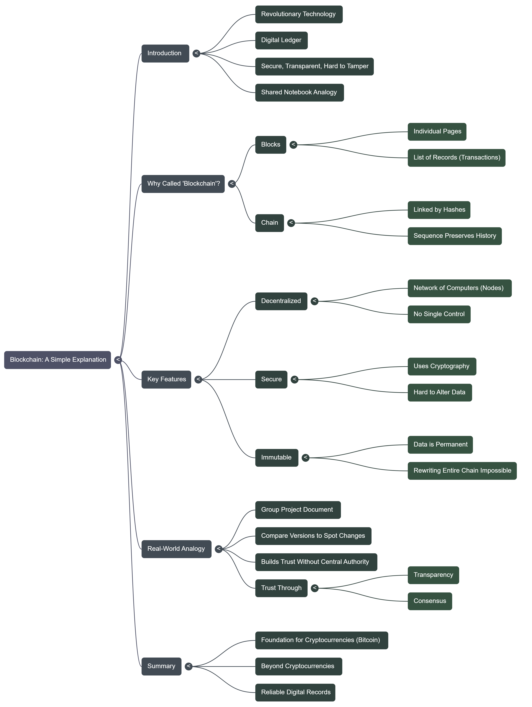

Introduction |
Blockchain is a revolutionary technology that's changing how we store and share information online. At its core, it's like a digital ledger—a record-keeping system that's secure, transparent, and hard to tamper with. Imagine a shared notebook where everyone can write entries, but once something is written, it can't be erased or changed without everyone noticing. That's blockchain in a nutshell. |
Why Is It Called "Blockchain"? |
The name comes from how the technology is structured:
- Blocks: These are like individual pages in the notebook. Each block contains a list of records, often called transactions (such as sending money or sharing data).
- Chain: The blocks are linked together in a sequence using special codes called hashes. Each block points to the one before it, creating a chain that's nearly impossible to break.
This setup ensures that the entire history of records is preserved and connected.
|
Key Features |
Blockchain isn't just a fancy database; it has unique traits that set it apart. Some think it's just a trend, but it's a foundational shift.
- Decentralized: Unlike traditional systems controlled by a single company or bank, blockchain runs on a network of computers (called nodes) spread around the world. No one person or group has full control.
- Secure: It uses cryptography—complex math—to lock the information. This makes it very hard for hackers to alter data.
- Immutable: Once data is added, it's permanent.
You can easily delete records. Changing it would require rewriting the entire chain, which is practically impossible on a large network.
|
A Real-World Analogy |
Think of blockchain like a group project where everyone has a copy of the same document. If someone tries to sneak in a change to their copy, the group can compare versions and spot the difference right away. This is how blockchain builds trust without needing a central authority[1].
Trust through...
- Transparency
- Consensus
|
| Media Example |

|
| Summary |
In summary, blockchain is the foundation for things like cryptocurrencies (e.g., Bitcoin), but its uses go far beyond that. It's a tool for creating reliable digital records in an untrustworthy world. If you're new to tech, start here before diving into more advanced topics! For more, see Google. |